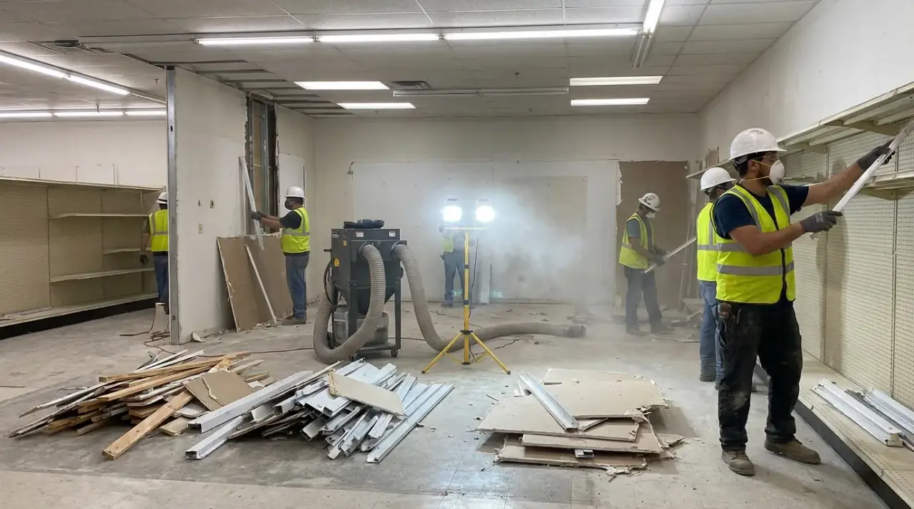
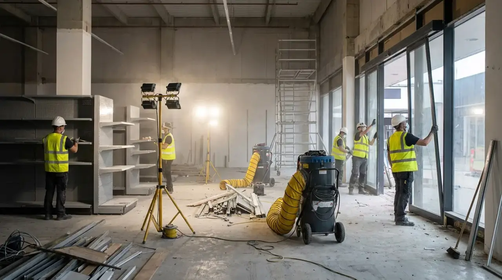

Begrippen
Strippen, verbouwen of slopen: wat is het verschil voor de regels?
In de praktijk praat iedereen door elkaar over strippen, renoveren, verbouwen en slopen. De wet kent maar een paar van die woorden, en juist die bepalen of je iets moet melden of een vergunning nodig hebt.

Wat de wet onder slopen verstaat
De Omgevingswet omschrijft slopen kort: het geheel of gedeeltelijk afbreken of uit elkaar nemen van een bouwwerk. Het woord "gedeeltelijk" doet het werk. Een badkamer tot op de muren leeghalen, een systeemplafond weghalen of een pand terugbrengen tot het casco valt daar allemaal onder. Ook het verwijderen van asbest uit een gebouw geldt als een sloopactiviteit, ook als er verder niets wordt afgebroken.
Woorden als strippen, renoveren of binnensloop staan niet als aparte begrippen in de Omgevingswet of het Besluit bouwwerken leefomgeving. Ze beschrijven hoeveel je weghaalt, niet welke regel geldt. Voor de regels kijk je dus naar wat er feitelijk gebeurt.
Drie vragen die de regels bepalen
1. Komt er asbest uit, of meer dan 10 m³ afval?
Dan moet je de sloop minstens vier weken vooraf melden bij de gemeente. Bij asbest geldt dat altijd, hoe weinig het ook is; anders pas boven de 10 m³ sloopafval. Die 10 m³ tel je per sloopactiviteit, niet per gebouw. Een flinke keuken met tegelwerk, een vloer en een paar binnenwanden kan daar sneller overheen gaan dan je denkt. Is het pand van voor 1994, dan heb je voor het deel waar je sloopt bovendien een asbestinventarisatie nodig.
2. Verandert er iets aan de draagconstructie?
Dan heb je naast eventuele sloopregels ook te maken met de regels voor bouwen. Een draagmuur weghalen is daarvan het bekendste voorbeeld: omdat de draagconstructie verandert, is daarvoor een omgevingsvergunning voor de technische bouwactiviteit nodig. Verbouwen is in de regel vergunningvrij zolang de draagconstructie, de indeling in brandcompartimenten en de isolatie van de gevel niet veranderen.
3. Gaat het om een monument, een beschermd gezicht of een plek met eigen sloopregels?
Op rijksniveau is slopen niet vergunningplichtig. Maar bij een rijksmonument is vrijwel elke wijziging vergunningplichtig, en het omgevingsplan van je gemeente kan voor bepaalde gebouwen of gebieden ook een sloopvergunning eisen. Dat zie je in het Omgevingsloket.
Drie klussen naast elkaar
| Klus | Sloopmelding? | Vergunning? |
|---|---|---|
| Keuken en tegels eruit in een huis uit 2005, ruim onder 10 m³ afval | Nee | Nee, tenzij lokaal anders geregeld |
| Hele benedenverdieping strippen in een jaren-zeventigwoning, met asbesthoudende vloertegels | Ja, minstens vier weken vooraf, met inventarisatierapport | Alleen als de draagconstructie verandert of het omgevingsplan het eist |
| Draagmuur tussen keuken en kamer weg, verder weinig afval | Alleen bij asbest of meer dan 10 m³ | Ja, voor de technische bouwactiviteit |
De tabel is een hulpmiddel om je klus in te schatten. Of er voor jouw adres nog meer geldt, zie je in de vergunningcheck van het Omgevingsloket.

Waarom het onderscheid ertoe doet
Wie een klus "verbouwen" noemt, slaat soms de sloopmelding over omdat er toch niets wordt gesloopt. Maar de vraag is niet hoe je het noemt; de vraag is wat er wordt afgebroken, hoeveel afval dat geeft en of er asbest in zit. Een melding die ontbreekt, is een overtreding, ook als het werk zelf netjes is gedaan. En onverwacht asbest midden in een verbouwing geeft vertraging: dan moet eerst nieuw onderzoek gebeuren voordat dat asbest verwijderd mag worden.
Andersom is ook goed om te weten: lang niet elke klus heeft papierwerk nodig. Een keuken vervangen in een huis van na 1994, met een paar kuub afval, kan zonder melding, zolang het omgevingsplan niets anders zegt en de draagconstructie blijft zoals hij is.
Strippen voordat je verbouwt
Bij grotere verbouwingen wordt het pand vaak eerst gestript. Juist dan komen materialen tevoorschijn die je vooraf niet zag, zoals plaatmateriaal achter een betimmering of een oude vloerlaag onder het laminaat. Daarom loont het om het asbestonderzoek af te stemmen op hoe ver het strippen gaat, en niet alleen op wat je aan de buitenkant ziet.
Twijfel je in welke categorie jouw plan valt, leg het dan voor aan iemand die de keten kent. Sloopregie zet dat soort klussen in Noord-Holland uit bij gecertificeerde sloop- en asbestbedrijven en zoekt vooraf uit welke melding of vergunning nodig is.
Bronnen
- Omgevingswet, bijlage, onderdeel A (begrippen slopen, sloopactiviteit, bouwen) en art. 5.1, geraadpleegd 25-10-2026
- IPLO, De sloopactiviteit (asbest verwijderen valt onder de sloopactiviteit)
- Besluit bouwwerken leefomgeving, art. 2.17, 2.26, 2.27, 7.9 en 7.10 en bijlage I (vergunningvrij verbouwen, draagconstructie, inventarisatieplicht, melding vier weken, begrip verbouwen), versie geldend vanaf 24-09-2026
- IPLO, Meldingsplicht sloopactiviteit (10 m³ per sloopactiviteit, niet bij asbest, onverwacht asbest)
- IPLO, Vergunning of melding bij de technische bouwactiviteit (voorbeeld draagmuur)
- IPLO, Sloopactiviteit (niet vergunningplichtig op rijksniveau)
- Rijksdienst voor het Cultureel Erfgoed, Wat moet ik weten als rijksmonumenteigenaar